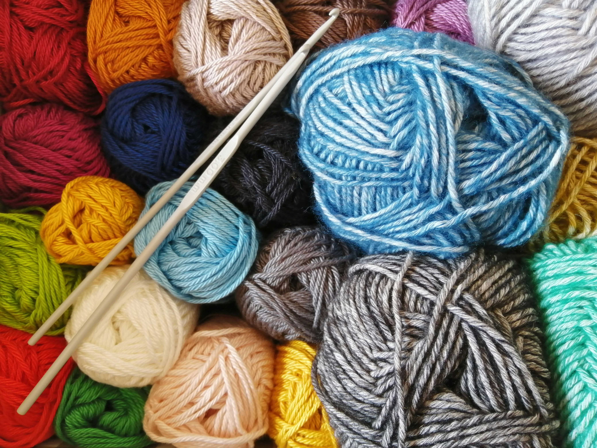
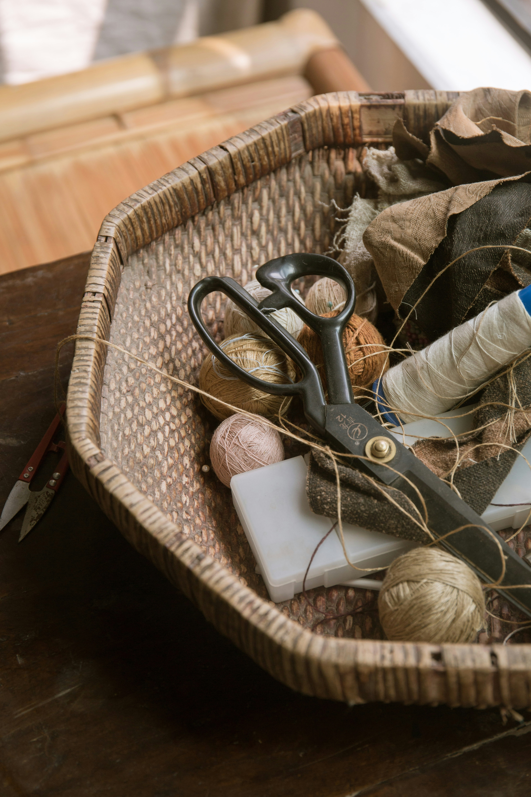
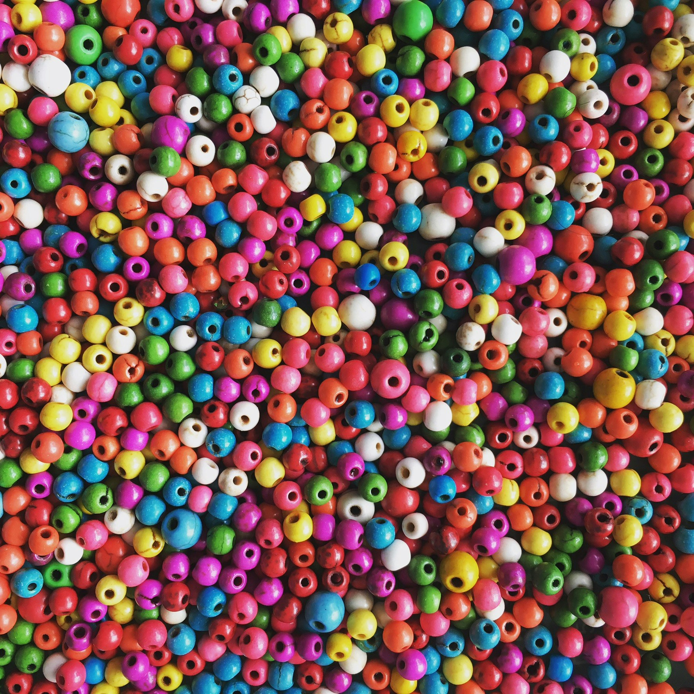
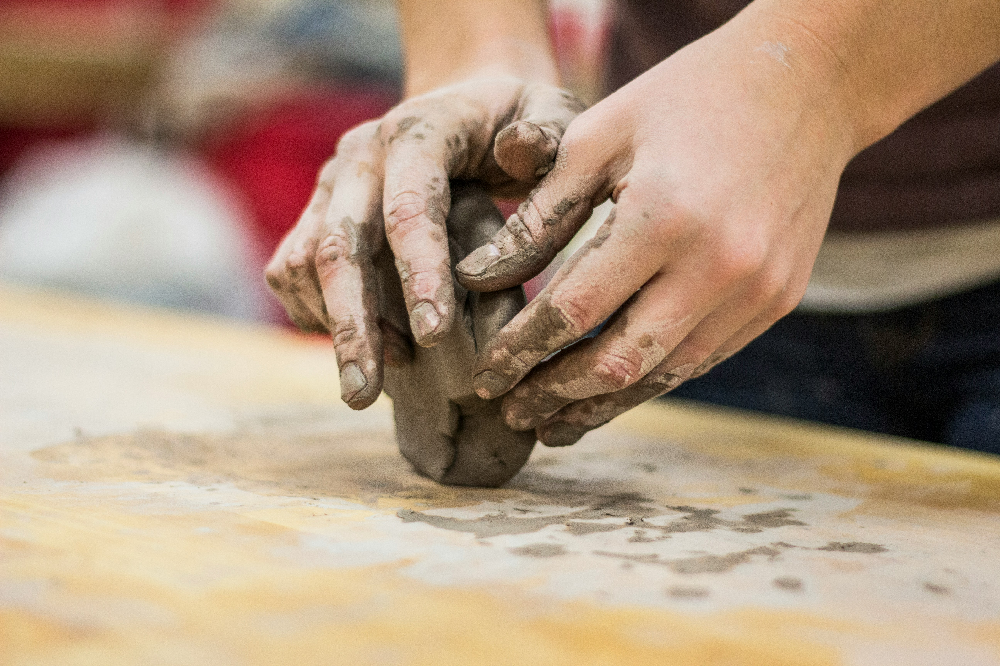

| Knit |  |
Create fabrics by interlocking loops of yarn with needles. |
|---|---|---|
| SEW |  |
Stitch fabrics together using a needle and thread or a sewing machine. |
| BEAD |  |
String together beads in unique patterns to create necklaces, bracelets, and more. |
| CLAY |  |
Mold clay to create three-dimensional objects or sculptures. |